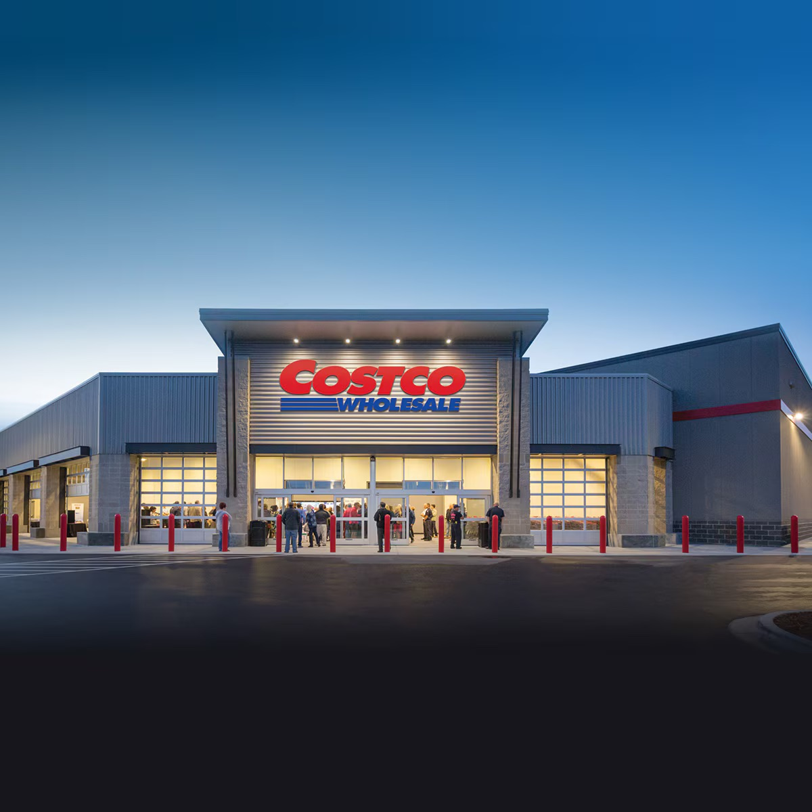

About the Project
Costco is known for its bulk groceries, competitive pricing, and strong customer loyalty, with over 129 million members worldwide. Offering everything from everyday essentials to luxury items, Costco’s pricing strategies and customer satisfaction levels make for an interesting area of study.
This project explores Costco’s online marketplace to analyze how product prices influence ratings, whether cheaper or more expensive items receive better reviews, and if Costco’s well-known discounts impact customer satisfaction. By examining these relationships, we aim to uncover what drives customer appreciation and whether Costco’s savings truly enhance the shopping experience. Our findings will provide insights into consumer behavior and the factors behind Costco’s success as a retail giant.
